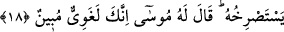

Mûsâ’dan önce Yâkub’un dîni üzere idiler ve bu sebeple Firavun kendisine ibâdet
ettirmek suretiyle onları hor ve hakir kılmıştır. İbn Abbâs (r.a.)’ın “mücrimlere
yardımcı olmayacağım” sözünü “kâfirlere yardımcı olmayacağım” şeklinde tefsir
etmesi, “mücrim” lâfzının mutlak olarak kullanıldığında bir şiddet ve tağlîz ifâdesi
olarak fâsık mümine de delâlet ettiğini gösterir.
Sonra bu duâyı ve “
” kavl-i celîlini, insanlar arasında din, mülk ve
benzeri konularda ayrılık ve ihtilaf çıkınca okumak müstehab görülmüştür. Mûsâ (a.s.),
iki kimse dövüşürken Allah’a böyle ilticâda bulunmuştur. İbn Ömer (r.a.) da, Ali ve
Muâviye (r.a.) savaşırken bu âyetleri okuyarak Allah’a duâ etmiştir. Nitekim Keşfü’l-
esrâr’da bu şekilde kaydedilmiştir.
Yine âyette filozoflar, brahmanlar, ruhbanlar ve benzeri mücrimlerin yapmış oldukları
mücâhedelerin şeytanın amelinden olduğuna da bir işâret vardır. Onlar, şerîat ve ona
tabi olmak için değil; nefsin arzu ve isteklerini yerine getirmek için mücâhede eden
günahkâr kimselerdir.
18. Şehirde korku içinde, (etrafı) gözetleyerek sabahladı. Bir de ne görsün, dün
kendisinden yardım isteyen kimse, feryâd ederek yine ondan imdat istiyor. Mûsâ
ona (yardım isteyene) dedi ki: Doğrusu sen, besbelli bir azgınsın!
“Şehirde korku içinde, (etrafı) gözetleyerek sabahladı.” Yâni Mûsâ (a.s.) şehirde
sabah vaktine girdi, demektir. Âyette öldürme hâdisesi ile şehre girişin akşam ile yatsı
arasında insanlar kendi işleriyle meşgul iken vuku bulduğuna işâret vardır. Nitekim bazı
müfessirler bu görüştedir.
“
(korkarak)” kelimesi hâl ifâdesidir. Yâni Mûsâ (a.s.), Firavun ve yakınları
tarafından kendisine gelebilecek bir zarardan dolayı etrafını gözetleyerek ve kısas
gereği öldürülmesinin talep edilmesinden korkarak olayla ilgili haberleri, hakkında
konuşulanları ve kâtilin bilinip bilinmediğini araştırarak sabahladı. “
” kelimesi,
istenmeyen ve hoşlanılmayan bir şeyin beklenilmesi anlamına gelir. Müfredât’ta
”
fiilinin, gözetleyerek ve etrafı kontrol ederek sakınma ve korunma anlamına geldiği
kaydedilmiştir. Bu, ya mahfuz (korunulan) şahsın durumunu gözetmekten (hukukuna
riâyetten); ya da o kimsenin önemli biri şahıs oluşundan dolayıdır. “
” ifâdesi mufacee
içindir; yâni “ansızın” ve “birdenbire” mânâlarına gelir.
“Bir de ne görsün, dün kendisinden yardım isteyen kimse, feryâd ederek yine ondan
imdâd istiyor.”